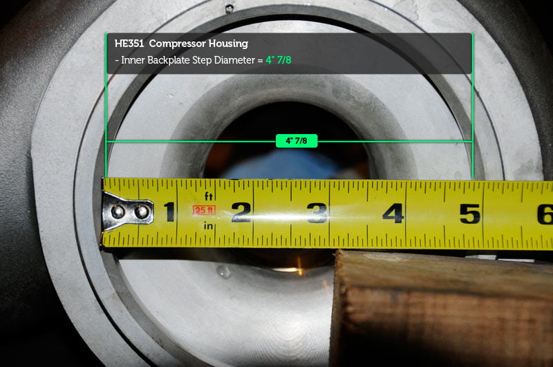
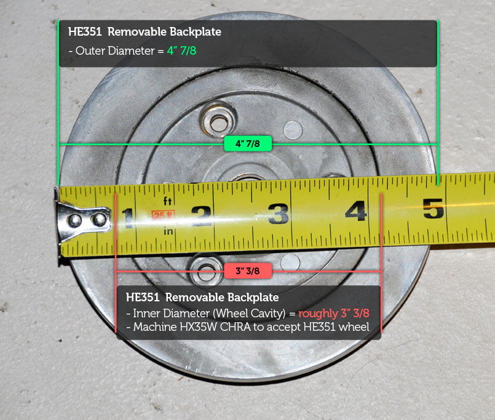
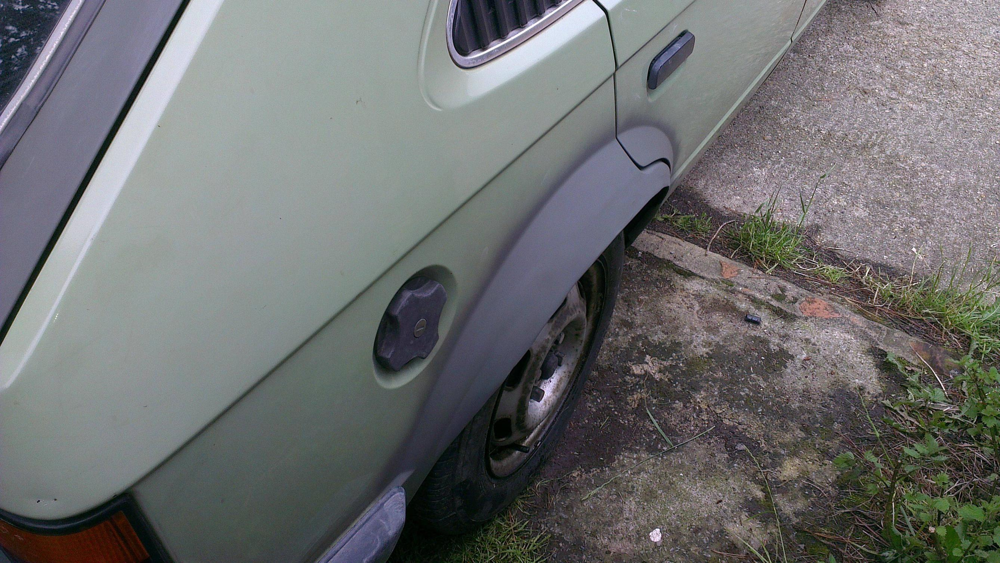

-
Careless, be sure to take the turbo to someone to get it rebalanced with the new wheel. The whole rotating assembly (turbine wheel/shaft, thrust collar and wheel etc) is balanced together and will hurt performance/reliability if you just slap a new wheel on your existing shaft.

1988 300zxt. gt35, stance, etc. Wheels: Varrstoen ES2 18x9.5 et-13 225/40. 18x10.5 et0 245/40
1990 jetta vr6'd -
already called Cherry Turbo.DeleriousZ wrote: Careless, be sure to take the turbo to someone to get it rebalanced with the new wheel. The whole rotating assembly (turbine wheel/shaft, thrust collar and wheel etc) is balanced together and will hurt performance/reliability if you just slap a new wheel on your existing shaft.
The best in Ontario. Learned my lesson after the last turbo rebuilder. Just too many issues with the stock turbo to try and find that guy again.
fanks brah.
honestly not too sure if i should hold out and just put the hx35w on without the larger compressor cover/wheel for now. -
this belongs in this thread: HE351VE cold side parts.
-
Just thought I'd share.
My Hx35 came with an odd sized v-band flange outlet.Went this route because it was the cheapest. If the 3" outlet plates ever pop up again on ebay at a reasonable price, then I'll upgrade. Not sure how much of a difference there is though. So this is the $20 3" v-band kit solution that has been posted on other forums. I grinded down the original flange just a bit, put the 3" v-band flange over it until it was starting to go in, and then smacked it down with a rubber mallet for a tight fit.vg33et -
just a good comparison of an 300zx 84T turbo and an HX35W
comparison shots of the HE351 to come:
-
NEW SHIT! (long read, but it contains most info. pics to come if it happens soon)
ok so I took the compressor cover off the HX35W, and i took the He351ve comp cover out of the box it came to me in.
Here is what I noticed.
1) HX35W has a CHRA integral backplate- meaning the backplate does not "bolt on", it is rather machined into the CHRA.
2) the HE351 series has a backplate that is held on with 3 screws. The HE351 also has the same part number as the HX40 wheel in most applications- and all wheel sizes are the same (so that means I can upgrade to an HX40 PRO billet wheel later). So that means the wheel radius, inducer/exducer are the same as the HE351- this is good news!
3) There are those who put HX40 wheels on HX35's. It requires a simple widening of the wheel cavity that the comp wheel floats within that is ground into the backplate. Solution for HX40 ppl is to have the HX35 wheel cavity machined to 1mm or so over the diam of the HX40 wheel. The underside wheel tulip shape is roughly the same and requires little to no modification to the HX35 CHRA/"Backplate" area. So widening is all that's required.
here is a picture of what's involved.
This is the HX35 wheel in a machined cavity to accept the HX40 wheel. You can see the area around the HX35 wheel that is to be machined- and has been on this photo.
4) The integral CHRA backplate on the HX35 is THICK. thick enough that the cover has a lip around the outside of the CHRA that is where the HX35 cover/housing seals. The HE351's seal is made up of an o-ring that sits alongside a removable backplate (i.e. - not ground into the CHRA, it floats above).
so what does one do with all these parts?
Well lets look at some things mentioned.
HX35 has an integral backplate with no step, but it's very thick.
HE351 has a removable backplate that CREATES a step for an o-ring to sit alongside, and the HE351 cover slides over that and is clamped around the perimeter using a v-band type R.G.Ray clamp from factory.
HX40 wheels fit HX35 CHRA with machining of the wheel step. No tulip/wheel backside machining involved.
Here's where it gets interesting (and potentially in my favor).
The CHRA integral backplate of the HX35W has a step around the perimeter as mentioned prior, and it is what the HX35W seals against. It is the EXACT SAME DIAMETER as the v-band lip on the HE351 cover. Making sense so far?
The extra material that goes beyond this step need be machined off the housing. Easy as there's no obstruction for the machine to have to overcome when machining that. It just needs to be ground off so you no longer have a "step" for the HX35W housing c-clip to brace the HX35W housing against.
So now I have an HX35W with a VERY thick backplate, as the step is now removed. And now the HE351 vband clamp slips over this, and it's the same diameter as the HE351 vband lip. But now the cover sits way too far above the HX40 wheel in the HE351 housing. So this becomes an issue, both with centering the HE351 cover and bolting it on, as the clamp cannot grip to this, and it has no where to seal.
Easy again. measure the backplate thickness and the HX40 wheel height. Measure the HE351 wheel gap and bring it back into spec. in other words, Machine the THICK lip that is left over from cutting off the old lip back into spec by machining a new step on the perimeter of the HX35W integral backplate, and make it the same height as the HE351 backplate, leaving enough clearance for the HE351 o-ring to seal against.
slide that over the wheel, check the clearance, and slide the v-band over the newly created harmony of v-band lippage… Bolt down with the RG Ray clamp.
Done.
I am going to send off the turbo to be rebuilt as it looks like there was some oil leaking into the compressor housing of the HX35W… i am going to ask Herman @ Cherry Turbo to take a look at what I'm illustrating and ask him if it's something he can do (which I'm sure he can).
If possible, I will have- as someone pointed out… the WHOLE SET turbo… an HX35/40/351 hybrid.
If hermans says it's too much work or the cost is sky-high (he's making 3 cuts, big deal), then I will run the HX35W housing and cry that my setup is not as clean as I wanted it to be- because I wanted to eventually unbolt the HE351 housing (which would be fucking eassssssssy!) and give it to someone to clean up and polish. -
You could also just buy the HX40 housing for $125.00 and not worry about machining?88na2T-s13,q45 swap 12.6@110mph
87T 2+2 auto,stock -
It's the 90 degree bend that I want. And the unit is coming apart anyways to get rebuilt.
I know like 99% of you guys are calling me crazy for doing it this way (or stupid)…
but what have I done that was within the norm anyways?
VG33 long block from a quest, I was called stupid because I didn't use the Z31 crank… ? it worked.
V-mount setup was called a fad… ? seems to have worked (need the thicker version of my current rad- bolts in the same)…
Clean, short, and shiney pipe routing for the turbo which was the basis of the v-mount setup… ? i will make it work.
Come on guys, this may be unnecessary modifications to make this sort of power- or unnecessary money spent… but this is hot-rodding and this is fabrication. Let's not frown upon it. Z31's need this kind of unnecessary love. That's what makes people look at a Z31 and say "really clean setup. I like that".
Who cares if it's not practical or can be done cheaper? How many people have stuffed V8's in their datsun and don't drag or auto-cross?
Anyways… I will provide pics and diagrams for anyone who wants to do the "WHOLE SET" (courtesy: MrFishHat) turbo since I will be sending detailed measurements and pictures to Herman @ Cherry Turbo. He has all incarnations of these turbos and has machined some pretty good stuff and does it all in house from what I've heard. Apparently he's the best in Ontario- probably the entire east side of the country.
Put things into perspective here. Essentially he is making 3 cuts.
1) one for the wheel cavity
2) one to hack off the current seal step for the inside of the hx35w cover
3) one to re-step the backplate to accept the v-band and reseal the he351 cover.
Just to add one more point. If I do this upgrade.DMANN wrote: You could also just buy the HX40 housing for $125.00 and not worry about machining?
I sell my HX35W cover and 7 blade assembly to a local board member for a good price to cover machining, and that makes it worth it to me.
If I don't go this route, I sell the HE351 to another board member who told me he might need it.
So really, not a lose-lose by any means. -
So… I'm looking at my HX35… and I realize… I have a billet compressor wheel- which came on some HX40's, and is very rare for an HX35.
It seems to have these grooves on the wheel, whereas my HE351 does not.
The grooved lines seen on fully-machined wheels are a result of the machining process and are not part of the wheel's aerodynamic design. They are the path that the cutter tip has taken to machine the wheel. There is no intention to direct airflow in any way using these lines. -
This is what's happening.
None of this "so much work for nothing" bullshit.
Save it for someone who doesn't care about modding shit to make it fit how they want it, and not how everyone else has done it.
just putting this info here so you guys know what I am doing / did / am having done.
Here's a pictoral of the dimensions I took. All roughly done using a tape measure and one hand.


Here's a pictoral of the 3 SIMPLE MACHINING OPERATIONS that need to be done to have this work. It's really nothing crazy.

using this housing on the turbo I have will give me twin-scroll capability with the option of reducing my TOTAL INTERCOOLER PIPING to 2.5 feet or less, MAF and BOV included- when I upgrade my manifolds (both intake, and exhaust). -
This is a very good informative post! :idea: -
shipping it out this weekend. pics upon return.Confirmation from Cherry Turbo wrote: "Definitely Do-able. Have done similar with VW and KKK and Garret hybrids and many other holset builds." -
Long post warning (in case you're scroll handicapped).
Didn't bother shipping the turbo. I drove 250km today to meet with Herman @ Cherry Turbo. Have to say he is one of the coolest and most honest people in any sort of engine/mechanical field that I've had the pleasure of meeting. His shop is a small operation but he does big things for big name companies from what I'm told.
A little background, he's been around since 1992, and he has rebuilt over 2800+ turbos, and has only had 9 fail. That is a 0.321% failure rate on his work. Those include precision turbos that he got brand new that had the thrust clearances setup incorrectly or had fluttering and boost issues out of the box. He is a fan of holset turbos and is looking for cores- so contact me if you have something he can use.
As for the turbo, he says 10 hours of @ a reasonable rate, puts this entire turbo at the price of what a precision, comp, or a turbonetics turbo might cost used. However, he will be porting the wastegate flapper, radiusing the gasket surface on the twin entry T3 flange to remove the reversion dam on the gasket mating surface, rebuilding the internals, balancing every component individually using a harmonic balancing machine- not a regular VSR machine that is commonly used, and possibly drilling a through the scroll dam to make both scrolls vent, as he said once the turbo is spooled the twin scroll makes little difference as it has to bypass the wheel to relieve itself anyways. This would let the wastegate do its job as done on a gasoline engine application (not a "boost control" gate as it's used on diesel engines it comes on).
However, through some bargaining- I've managed to make this turbo a reality for "free" so to speak
Herman was keen to work on the turbo and said "I want to build this for you, because I think it would be an awesome combination and something that I've not seen done before"
Also, discussing my intercooler piping with Herman he was amazed at the fact that I could have the entire turbo intercooled setup with a total of less than 2 feet of piping when I relocate the turbo, using either a satan manifold or my own in the future. He said with this turbo and with my super short intercooler piping and large intercooler, I should have extremely quick throttle response, even off boost if the engine management system is of a certain type… MAP or MAF, but we didn't get into that.
Should be done in 1 week, but i told him 2 weeks is ok by me so he can do whatever else he has laying around.
All in all, I'm glad I got to meet him and discuss this hybrid HX351W. -
I'm sure i'm going to feel like a dumbass asking this but before i even knew about z31 performance or even knew what a vg30et was, holsets have always been my turbo of choice when it comes to cheap, reliable power.
Well i got a vg, then i got an hx35 (external, v band downpipe) as a core but it has ZERO damage or shaft play and only cost me a bank breaking $268 shipped. mint turbo, ready to go. Sweet.
Anyway i'm having a hard time choosing a wastegate. Some of you guys are running the stock flapper on the "w" models, slightly ported and with a different actuator diaphram and whatnot. I was wondering if i went with a single tial 38mm if i'd run into creep or if it would be all the wastegate i'd ever need with my hx35?
Thanks guys. If my post is stupid or doesn't belong here, feel free to inform me and take appropriate action.vg30'd s13 in progress. Shocks. Pegs. Lucky. -
just go with a 44 or 50mm to be sure that the valve size won't be a hindrance at all.slammedfc wrote: Anyway i'm having a hard time choosing a wastegate. Some of you guys are running the stock flapper on the "w" models, slightly ported and with a different actuator diaphram and whatnot. I was wondering if i went with a single tial 38mm if i'd run into creep or if it would be all the wastegate i'd ever need with my hx35

Copyright © 2006–. All rights reserved. Privacy Policy